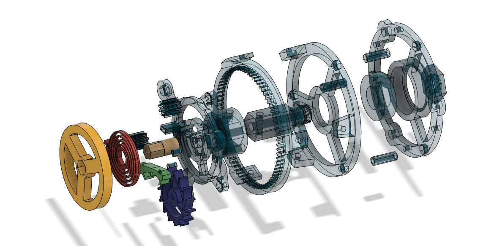

A snippet of the demo code for the machine learning model that was used to train the demo computer vision model.
Since 2021, I've been constantly learning and improving my knowledge and skills with machine learning.
This is one of the first major projects that stems from my desire to learn more about this topic and
engage in it in a greater way. Furthermore, it's a project that would potentially benefit me and other
musicians after its competition.
The Process
I learned as much as I could on machine learning, which includes computer vision. Whether those resources
were YouTube videos or textbooks, I put a lot of effort into understanding the fundamental concepts (including
the maths behind it (convolutions, matrix multiplications, etc.))
After learning the ins and outs of machine learning (or at least to the best of my abilities), I learned the
PyTorch machine learning library. Through it, I am able to create and train my own models (or use other models
that other people have trained) for my own programs and projects.
High-Level Overview of the Functionality

Output Predictions made by the Computer Vision Model